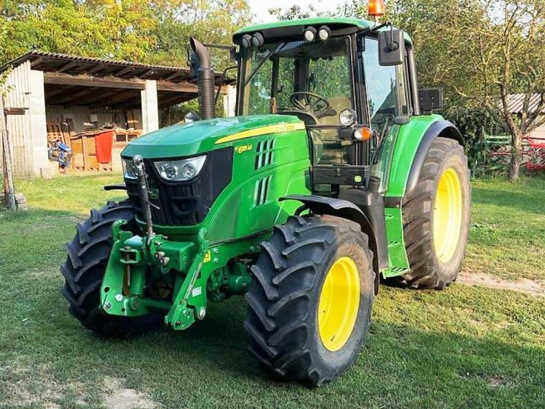

John Deere 6155M

Трактор John Deere 6155M – це універсальний середньопотужний трактор, розрахований на інтенсивну щоденну роботу в полі, на фермі та в транспортних операціях. Модель поєднує сучасний двигун, надійну трансмісію PowerShift і продуману гідравлічну систему, що робить її ефективною для широкого спектра агротехнологічних завдань. Це машина для тих, хто шукає баланс між потужністю, економічністю та технологічністю. Він підходить для ґрунтообробки, посіву, внесення добрив, транспортування та роботи з навантажувачем, забезпечуючи стабільний результат у будь-яких умовах.
| Параметр | Значення |
|---|---|
| Клас тяги | 3,0 |
| Тип ходової частини | колісний |
| Колісна формула | 4х4 (4WD) |
| Тип рами | повнорамна конструкція (Unique Steel Full Frame) |
| Основне призначення | енергонасичені польові роботи, транспортування важких вантажів, робота з широким спектром причіпних агрегатів |
| Параметр | Значення |
|---|---|
| Модель | John Deere PowerTech™ PVS / PSS |
| Тип двигуна | 6-циліндровий, турбодизель, Common Rail, система Intelligent Power Management (IPM) |
| Спосіб охолодження | рідинне |
| Розташування циліндрів | рядне, вертикальне |
| Діаметр циліндра/хід поршня | 106 мм / 127 мм |
| Робочий об’єм | 6,8 л (6788 см³) |
| Номінальна потужність | 114 кВт (155 к.с.) / Макс: 164 к.с. (без IPM) |
| Номінальні оберти | 2100 об/хв |
| Система пуску | електростартер |
| Питома витрата палива | 200–210 г/кВт·год |
| Параметр | Значення |
|---|---|
| Муфта зчеплення | мокра багатодискова PermaClutch™ 2 |
| Тип КПП | PowrQuad™ Plus / AutoQuad™ Plus або CommandQuad™ Plus |
| Кількість передач | 20 вперед / 20 назад (стандарт) або 24 вперед / 24 назад |
| Кількість діапазонів | 5 або 6 (залежно від версії КПП) |
| Діапазон швидкостей (вперед) | 2,5 – 40,0 км/год |
| Діапазон швидкостей (назад) | 2,5 – 40,0 км/год |
| Вал відбору потужності | задній незалежний, 540 / 540E / 1000 об/хв |
| Діапазон | Передача | Швидкість, км/год | Передаточне число | Тягове зусилля, кН |
|---|---|---|---|---|
| A (Low) | 1 | 2,50 | 290,1 | 70,50* |
| A (Low) | 2 | 3,00 | 241,7 | 70,50* |
| A (Low) | 3 | 3,70 | 196,1 | 70,50* |
| A (Low) | 4 | 4,50 | 161,2 | 68,20 |
| B | 1 | 5,20 | 139,5 | 59,00 |
| B | 2 | 6,30 | 115,2 | 48,70 |
| B | 3 | 7,70 | 94,2 | 39,80 |
| B | 4 | 9,40 | 77,2 | 32,60 |
| C (Medium) | 1 | 8,20 | 88,5 | 37,40 |
| C (Medium) | 2 | 9,90 | 73,3 | 31,00 |
| C (Medium) | 3 | 12,10 | 60,0 | 25,40 |
| C (Medium) | 4 | 14,80 | 49,0 | 20,70 |
| D | 1 | 12,90 | 56,3 | 23,80 |
| D | 2 | 15,60 | 46,5 | 19,70 |
| D | 3 | 19,10 | 38,0 | 16,10 |
| D | 4 | 23,30 | 31,1 | 13,20 |
| E (High) | 1 | 22,10 | 32,8 | 13,90 |
| E (High) | 2 | 26,80 | 27,1 | 11,50 |
| E (High) | 3 | 32,70 | 22,2 | 9,40 |
| E (High) | 4 | 40,00 | 18,1 | 7,70 |
| Примітки | Значення |
|---|---|
| 1 | 70,50* — Максимальне тягове зусилля обмежене зчепною масою трактора (при експлуатаційній вазі ~7,2–8,5 т із баластом). |
| 2 | Трактор 6155M має вищі показники тягового зусилля порівняно з 6110M завдяки більшій масі та потужнішому 6-циліндровому двигуну. |
| 3 | Для версії з 24 передачами додається діапазон F, що дозволяє більш плавний підбір швидкостей у транспортному режимі. |
| Параметр | Значення |
|---|---|
| Тип коліс | пневматичні шини (радіальні) |
| Марка шин | передні: 420/85 R28; задні: 520/85 R38 (базові) |
| Радіус ведучого колеса | 0,915 м (для задніх коліс) |
| Кількість коліс | 4 (можливість встановлення спарених коліс) |
| Ведучі мости | обидва (передній міст TLS™ Plus з незалежною підвіскою) |
| Режим | Витрата |
|---|---|
| Під час роботи з навантаженням | 22,5 – 28,5 кг/год |
| Під час холостих переїздів | 8,5 – 11,0 кг/год |
| Під час зупинок (холостий хід) | 1,8 – 2,4 кг/год |
| Параметр | Значення |
|---|---|
| Маса експлуатаційна | 6700 – 7200 кг (без баласту) / до 10450 кг (макс.) |
| Довжина / Ширина / Висота | 4730 мм / 2490 мм / 2950–3100 мм |
| Колія / База | 1616–2135 мм / 2765 мм |
| Дорожній просвіт | 510 мм |
| Мінімальний радіус повороту | 5,2 м |
| Об’єм паливного баку | 265 л (AdBlue — 16 л) |
| Параметр | Значення |
|---|---|
| Особливості кабіни | Кабіна 6M (стандарт), пневмосидіння, ергономічне розташування важелів, огляд 310°, рівень шуму 70 дБа |
| Гальма | мокрі багатодискові, інтегровані в задній міст, гідравлічний привід |
| Начіпний пристрій | задня триточкова навіска (Кат. III/II), вантажопідйомність — 6350 кг (опційно до 8500 кг) |